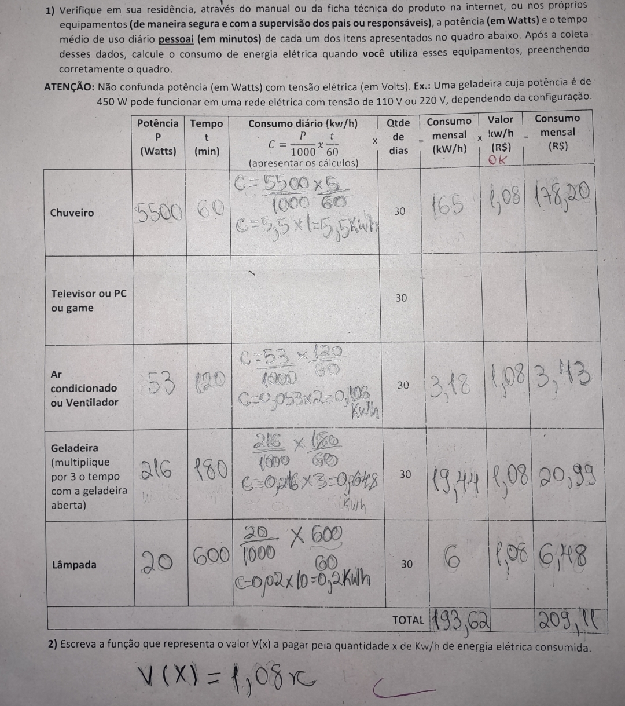

Esta é a planilha de custos desenvolvida na disciplina de Matemática. Nela foram organizados os gastos de consumo elétrico, permitindo calcular o consumo de energia e o valor aproximado da conta.

Esse trabalho ajudou a entender como aplicar cálculos matemáticos em situações do dia a dia, além de mostrar a importância de controlar os gastos de energia.